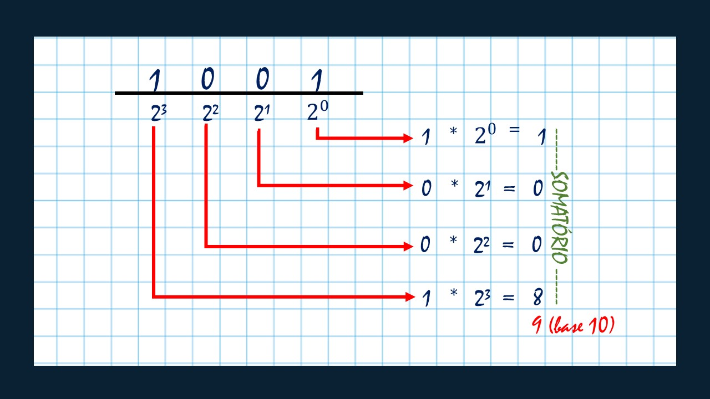
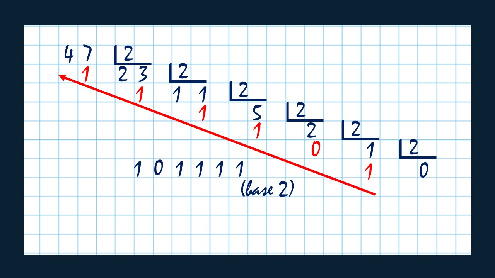
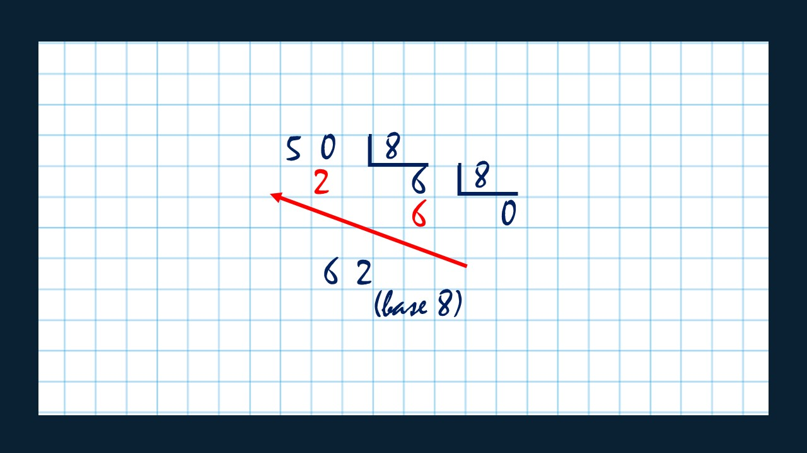
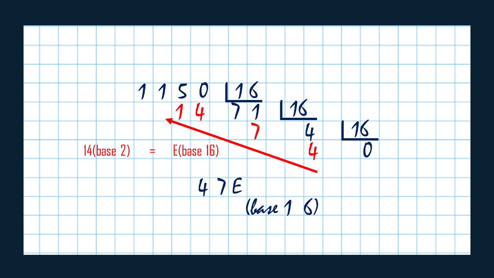

Bem vindo ao curso de
conversão de bases numéricas.
Desenvolvemos esse curso para você, entusiasta da área de informática, que pensa em começar uma carreira. O estudo de bases numéricas, em especial a binária, é essencial a todo bom desenvolvedor de software, engenheiro da computação, cientista da computação, ou qualquer outra sub-área desse vasto mundo que é a informática. No final, é tudo um monte de zeros e uns, e converter esses dados para outras bases, principalmente a decimal, é fundamental para o bom relacionamento entre o profissional (que é um ser-humano) e o computador (que é uma máquina). Aproveite bem nosso conteúdo!
Objetivo geral do curso:
Ao final deste curso queremos que você tenha clareza sobre o que são bases numéricas, a aplicação delas na máquina e no ser-humano e como converter as informações para diferentes bases. Lembre-se que este é um tema complexo. Nosso entuito é introduzi-lo ao assunto e mostrar conceitos básicos, para que você tenha um pouco mais de ideia sobre o que significa tudo isso e não chegue na faculdade de mãos abanando.
Material necessário:
Separe uma lápis, borracha, caneta e papel. Como vamos apresentar conceitos matemáticos não iremos utilizar softwares especiais nem nada disso... Ah, certifique-se de estar sempre numa conexão com a internet ;)
Introdução ao conceito de bases numéricas
Bases numéricas são conjuntos de simbolos utilizados para representar um valor, ou uma quantidade. Por exemplo, podemos dizer "Tenho 20 anos!", "Isto custa 12 reais", ou "a distancia entre as cidades é de 100 km". Em todos esses exemplos foram usadas representações numéricas para expressar a idade, o preço e a distância. Em todos os casos as representações numéricas estão na base decimal, que é a utilizada por nós seres humanos. Mas o que significa isto? Significa que estas representações fazem parte de um conjunto de 10 algarismos, ou símbolos, usados para representar esses valores. São eles: 0, 1, 2, 3, 4, 5, 6, 7, 8 e 9. Qualquer número em base decimal é feito através de uma combinação entre esses algarismos.
Apesar da base decimal ser a mais utilizada no dia a dia, ela não é a única que existe. Os computadores, por exemplo, gostam muito de outro tipo de base, a binária. Se para nós os valores são combinações que vão de 0 a 9, para o computador tudo não passa de 0 e 1!
Porque e para que são usadas bases numéricas diferentes
Cada base numérica é utilizada de acordo com a realidade de quem está usando. Nós, seres-humanos, por exemplo usamos a base decimal por sermos acostumados com ela desde a infância. Além do mais, o fato de termos dez dedos nos ajuda a contar no sistema decimal. Porém, para o computador é muito díficil trabalhar com esta base, pois ela tem muitos algarismos, muitas informações. Por isso as máquinas são desenvolvidas para trabalharem com o sistema binário, pois neste caso só duas informações: 0 e 1. As bases octal e hexadecimal são usadas como "intermediadoras" entre o binário e o decimal, ou seja, entre o relacionamento da máquina com o desenvolvedor, pois é mais fácil matematicamente para nós, converter valores do binário para essas bases. Atualmente, a hexadecimal é mais usada que o octal.
Um pouco sobre a lógica de bases numéricas
Vamos usar novamente de exemplo a base decimal. As possibilidades de números que podemos representar com ela são : 0, 1, 2, 3, 4, 5, 6, 7, 8, 9. Neste caso, o número de maior valor é o 9. Se quisermos representar um número maior que ele, precisamos usar um dígito que tenha o mesmo valor que o 9 acrescido de 1. 10 é este dígito, pois 9 + 1 = 10. Apartir daí repete-se toda a sequência novamente: 10, 11, 12, 13, 14, ..., 20, 30, 40, 50, 60, 70, 80, 90, ..., 99. Novamente os digitos representam o algarismo de mais valor e portanto é preciso acrescentar um digito de igual valor ao que ja está representado acrescido de 1. 99 + 1 = 100.
Com isso concluímos que o peso de cada novo dígito à esquerda é igual ao peso do número já representado + 1, ou seja, sendo N a posição do digito mais a esquerda, seu peso na base decimal é igual a 10N. Isto nos leva à seguinte tabela:
| Dígito(N) | 4 | 3 | 2 | 1 | 0 |
| Peso | 10000 = 104 | 1000 = 103 | 100 = 102 | 10 = 101 | 1 = 100 |
Agora, no caso da base binária a lógica é a mesma. Temos 0 e 1, sendo o 1 o algarismo de maior peso. Para representarmos um valor maior é preciso acrescentar um dígito com o mesmo peso de 1 acrescido de 1. No caso da base binária é o 10. Continuando a sequencia o nosso próximo número será 11, o que novamente representa os algarismos de maior valor e exigindo o acréscimo de um novo dígito para representar um valor maior. A fórmula neste caso, para saber o peso do dígito mais à esquerda na posição N é: 2N. O número da base da fórmula é o mesmo da base numérica. Nossa tabela fica assim:
| Dígito(N) | 4 | 3 | 2 | 1 | 0 |
|---|---|---|---|---|---|
| Peso | 16 = 24 | 8 = 23 | 4 = 22 | 2 = 21 | 1 = 20 |
Continue conosco, agora vamos falar das conversões propriamente ditas!
Base binária para base decimal:
Vamos chamar cada posição de um número na base binária de "bit". Sabemos que cada algarismo tem um peso referente à sua posição, e seu valor é calculado da seguinte forma: A x 2N, sendo "A" o algarismo e "N" a sua posição, lembrando que começamos sempre na posição 0 e a leitura é feita da direita para esquerda. Dessa forma temos por exemplo o número 1001 na base 2. Para achar seu valor na base decimal basta somarmos cada produto do algarismo pelo seu peso. Como estamos falando de binário, os únicos algarismos possíveis são 0 e 1, e como a multiplicação por 0 é sempre igual à 0, podemos entender que quando um bit é igual a "1" ele está ligado, e quando é igual à "0" está desligado. Assim podemos somar somente os produtos dos "bits ligados". Com base nisto, nós temos do exemplo: 1 x 23 + 0 x 22 + 0 x 21 + 1 x 20. Somando os produtos dos bits ligados nós temos: ( 1 x 23 = 8) + ( 1 x 20 = 1) = 9. Logo, 1001 na base 2 é igual à 9 na base decimal.
Base decimal para base binária:
Vamos pegar como exemplo agora o número 47, na base decimal. Como queremos passar para a base binária(2), Vamos dividi-lo por 2. Preste atenção ao resto da divisão:
- 47 / 2 : resto 1 e quociente 23.
- Continue a divisão até o quociente ser 0 :
- 23 / 2 : resto 1, quociente 11.
- 11 / 2 = resto 1 e quociente 5.
- 5 / 2 = resto 1 e quociente 2.
- 2 / 2 = resto 0 e quociente 1.
- 1 / 2 = resto 1 e quociente 0.
Agora pegue os restos das divisões, da última para a primeira: 101111. Este é o numero 47 (decimal), na base binária! O nome deste método é divisões sucessivas. As imagens abaixo ilustram melhor esta conversão.
Base decimal para base octal:
Para identificar um número na base octal (8), começamos ele sempre com a anotação "x": x7675. Nesta base temos os algarismos: 0, 1, 2, 3, 4, 5, 6 e 7. Podemos utilizar o mesmo método das divisões sucessivas, mas neste caso, ao invés de dividirmos por 2, vamos dividir por 8:
- 50 / 8 : resto 2 e quociente 6.
- 6 / 8 : resto 6, quociente 0.
Pegando os restos, da última divisão para a primeira: 62. Temos então que 50 na base decimal é igual a 62 na octal. Ou seja: 50(base 10) = x62.
- 50 / 8 : resto 2 e quociente 6.
- 6 / 8 : resto 6, quociente 0.
Pegando os restos, da última divisão para a primeira: 62. Temos então que 50 na base decimal é igual a 62 na octal. Ou seja: 50(base 10) = x62.
Base decimal para base hexadecimal:
Agora que você já pegou bem a ideia das divisões sucessivas, vamos aplica-la na conversão para hexadecimal (base 16). Mas antes precisamos falar de uma coisinha importante.
O máximo de algarismos que vimos até agora foi 10, na base decimal, são eles: 0, 1, 2, 3, 4, 5, 6, 7, 8 e 9, certo? Pois bem, agora vamos trabalhar com a base 16, ou seja, precisamos de novos algarismos! Lembre-se que se você começar a combinar os algarismos a partir do 9, querendo representar o 10, 11, 12, 13 e etc, você está usando sistema DECIMAL. Para representarmos esses números em HEXADECIMAL precisamos de NOVOS símbolos para representar esses algarismos do 10 até o 15. É aí que entra os símbolos alfabéticos. Isso mesmo, vamos usar letras para representar os algarismos do 10 ao 15. Ou seja, a partir de agora, quando falarmos em A, B, C, D, E, F, você deverá entender 10, 11, 12, 13, 14, 15. Se liga na tabela:
| BASE DECIMAL | 0 | 1 | 2 | 3 | 4 | 5 | 6 | 7 | 8 | 9 | 10 | 11 | 12 | 13 | 14 | 15 |
| BASE HEXADECIMAL | 0 | 1 | 2 | 3 | 4 | 5 | 6 | 7 | 8 | 9 | A | B | C | D | E | F |
Obs.: Assim como usamos o "x" para identificar um número em octal, usamos o "0x" para identificarmos um número em hexadecimal.
Com tudo isso explicado, agora podemos exemplificar a conversão de decimal para hexadecimal. Vamos usar como exemplo o número 1150:
- 1150 / 16 : resto 14 e quociente 71.
- 71 / 16 : resto 7, quociente 4.
- 4 / 16 : resto 4 e quociente 0.
Pegando os restos das divisões, da última para a primeira temos: 4, 7, 14. Como estamos falando de hexadecimal, vamos trocar 14 por E. Assim, temos o valor 47E, ou seja, 1150(base 10) = 0x47E
Base binária para base octal:
Você concorda comigo que 8 é igual à 23? Então vamos dividir o número binário em grupos de 3 bits. Por exemplo, o número 100101101 fica 100 | 101 | 101.
Agora vamos converter cada grupo separadamente para a base decimal:
100 => 4 | 101 => 5 | 101 => 5
Pegando cada número decimal na sequencia temos 455.
Logo, 100101101(base 2) é igual à x455. Fácil, não?
Base binária para base hexadecimal:
E agora, 16 não igual à 24? Então seguindo a ideia o ítem anterior, vamos separar o número em binário agora em grupos de 4 BITS. O mesmo número do ítem anterior neste caso ficaria: 1 | 0010 | 1101.
Convertendo cada grupo para a base decimal temos:
1 => 1 | 0010 => 2 | 1101 => 13
Pegando cada número decimal na sequência temos 1, 2, 13. Como estamos falando de hexadecimal
precisamos converter o 13 para o respectivo valor no sistema, que no caso é "D". Então temos
12D. Logo, 100101101(base 2) = 0x12D.
Exemplos de equivalência para as bases numéricas:
Resumindo...
O método das divisões sucessivas serve para converter valores na base decimal para uma base N. Para isto, deve-se dividir o número pela base N sucessivamente até quociente ser igual à 0 (é claro, nao podemos dividir por zero né...). Então pegamos os RESTOS da última divisão para a primeira, e o número formado por elas é o valor convertido. Se estivermos ]convertendo para a base hexadecimal precisamos lembrar de trocar o 10, 11, 12, 13, 14 e 15 por "A", "B", "C", "D", "E" e "F".
Para converter um valor binário para a base octal devemos dividir o número em grupos de 3 bits (lembre-se que 8 = 23) e então convertemos cada grupo para o DECIMAL. O número formado então é o valor na base octal. No caso de conversão de binário para o hexadecimal o processo é o mesmo, porém dividimos o número em grupos de 4 bits (lembre-se que 16 = 24). Não esqueca de usar os devidos simbolos na representação em hexadecimal!